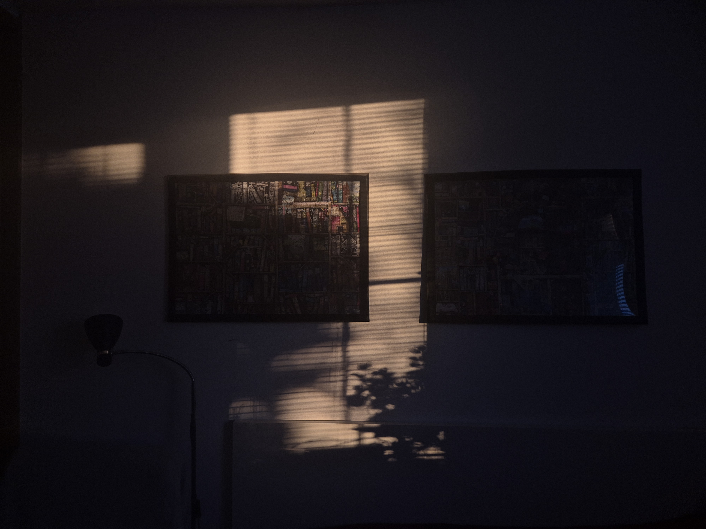
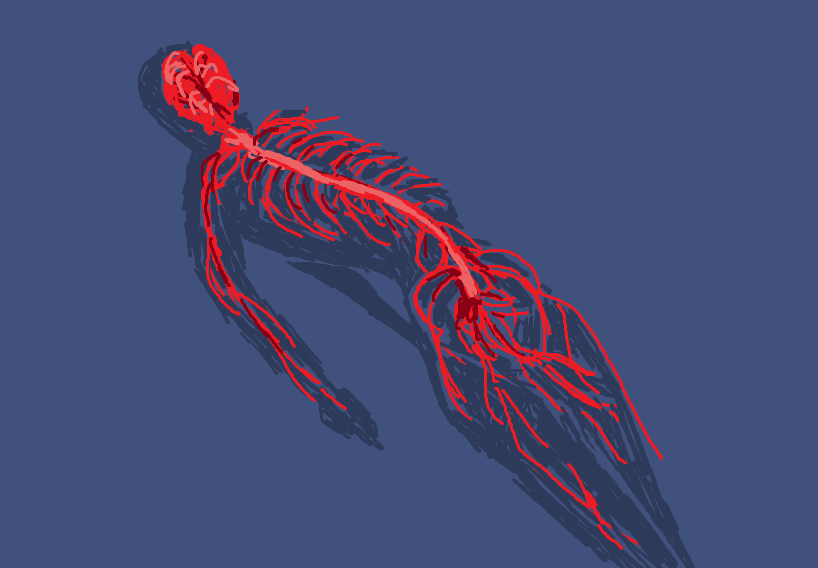

Living your life facilitates art.
When I look at art that inspires me, I tend to think "Oh, why didn't I think of that?"
or "How did the author conceptualize it? How long did it take them? What are all the things they had to take into account when making it?"
It seems typical for one to look at the piece as a product to be consumed, rather than a remaining record
of a creative process. However, I believe art's purpose really is self-expression.
Art is whatever makes your soul experience itself.


Change.
The experience of having someone tell me I'm not good enough has
always been a crushing one.
—"You'll get it when you're older." I didn't.
—"I think you should wait this one out." I wanted to take part.
—"You gotta do what you gotta do." I can't handle this.
As a child, I was taught to obey, not think. To work hard so that one day,
I would mature into the "person I'm supposed to be." One day, they will appreciate you.
Hatred festers within when you force yourself to pour your heart
into something you don't love. Day by day, you know yourself less and less.
You betray yourself every time you choose to ignore that gnawing feeling inside.
There is so much within you for you to discover. You already are someone but
you don't acknowledge it. Why?
But your soul resides outside of 'good' and 'bad'. Somewhere, out there, YOU are.
And God, how it scares me to imagine waking up one day, when it's too late,
and only then realizing that I lived my life in resentment.
It is my responsibility to live my life, not just let it happen to me.